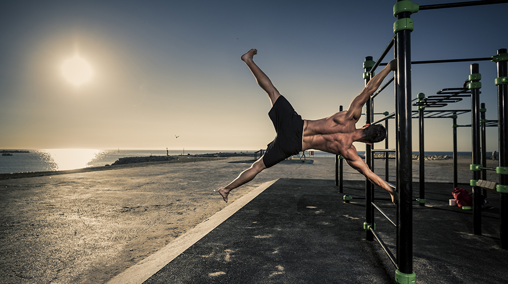
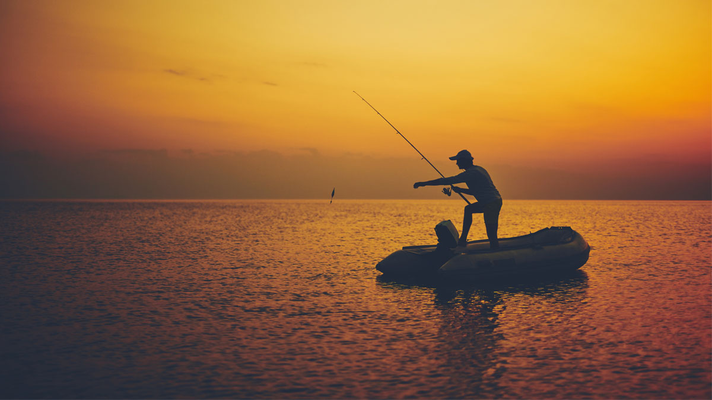

1.Chalistenics
I started Calisthenics in 2015.
I was terribly weak and skinny. I had hard times performing wall push-ups, day by day I improved and achieved my first push up, I recall being very happy that day.
The push-up progress bloomed from there, I started gaining more and more reps each week. I was performing push-ups in a perfect form; where my chest taps the ground and goes up to the full range of motion.
I finally completed a 100 Push-Ups a day challenge for 30 days in February 2018.
I started learning more and more exercises, and as I progressed this became harder.
The hardest exercise to achieve for me was Pull-Ups, they were the most difficult, it took me some good years to achieve my first Pull-Up.
From that day onward, I'm able to perform 10–11 Pull-Ups in a row, yes it may not be high but I learned this exercise in January 2020.
2.Reading books

My reading journey began at a very early age and was kickstarted by my family.
My mother and father encouraged me to read as soon as I could do it by myself.
However, I am unable to give all the credit to my parents.
As soon as I could read I devoured books at a break neck speed whenever I got free time.
Books became an island of fantasy where I would take my private jet mind to whenever I was stressed.
I may have been exposed to reading by my family, but I lovingly drowned myself in a sea of literature
as soon as I was able. My first memory as a reader was of “Harry Potter and the Philosopher’s Stone” but
ironically, I did not read it. My mother read small portions of the book every night before
I went to sleep.Slightly at my sisters urging, mostly to satiate the endless void I had for books,
I took on the mountain of a book “Brisingr” in fourth grade.
3.Fishing
I started fishing back when I was around ten years old,
which looking back was a good age to start although seven or eight might have been even better.
I became interested in having a go when I used to walk my pet dog every day around a quarry pond,
where I would speak to some of the guys who were fishing.
From then on, I wanted to have a proper go at fishing myself.
I used to spend the summer holidays fishing up there most evenings catching little roach and
perch with my friends. I didn't know it back then,
but it’s a brilliant way to learn the fishing basics by being content to catch small fish to begin with.
Some people enjoy the idea of being competitive and others perhaps are not so keen on that idea.
I'm not sure why but I fancied the idea of seeing whether
I could be as good or maybe even better than some of the other people that I saw fishing.
4.Painting
I was organizing my office when I came across a stack of old paintings
I've made over the years. As I flipped through the pile, memories of who and where I
was at the time of each painting flooded back. I always enjoy looking at how the work
of other artists progresses over time. I thought it would be fun to share a little about
my artistic journey.Growing up, I was fortunate to have two amazing parents that encouraged my interest in art.
My mom was a primary school teacher so we always art and craft supplies at home.There weren't many art classes for
me to take in high school and I didn't pursue a formal art education after graduating,
but I drew and painted when I could in my spare time.A few years out of high school, I bought a kit of cheap acrylic paint to try out.
Although I enjoyed the painting process, I remember feeling discouraged by the vast discrepancy
between what I pictured in my mind versus what I was actually able to create on paper.